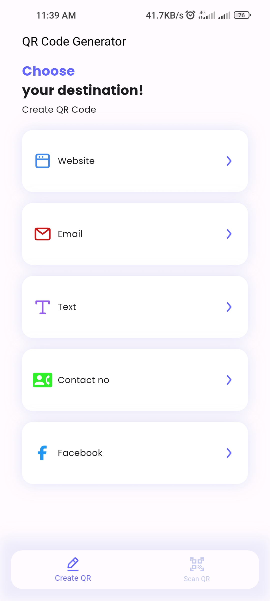
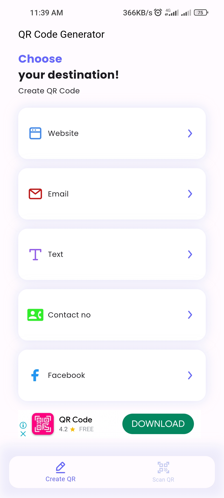
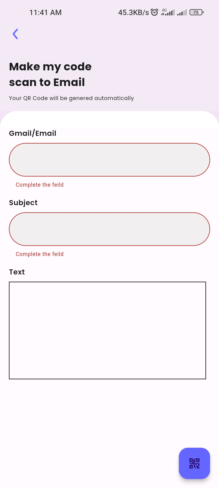

This is a dashboard screen which has a buttom navigation bar with two features
1. Create QR code
2. Scan QR code
this is Scan QR code screen's UI

this is the scsan result which you can copy to your clipboard

this is create QR screen which can create QR code for different purposes
this screen can create QR for websites link or any other links
this is a result after creating a QR code which you can share and save as well
QR code image after saving it to device

email screen with validations